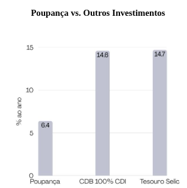

Poupança
Aprenda a poupar e como investir o seu dinheiro de forma inteligente e segura.
Aprenda a poupar e como investir o seu dinheiro de forma inteligente e segura.
Organize: Anote todas as suas receitas e despesas. Conhecer detalhadamente para onde vai o seu dinheiro é o primeiro passo para assumir o controle.
Pague-se: Separe o valor a ser poupado assim que receber seu salário. Não espere o fim do mês para guardar apenas o que sobrar na conta.
Otimize: Identifique e corte os gastos supérfluos do dia a dia. Pequenas economias mensais se transformam em grandes patrimônios com o tempo.
Poupança: A opção mais tradicional do brasileiro. Possui alta liquidez e isenção de impostos, mas atualmente entrega um rendimento que perde para a inflação.
Tesouro Direto: Títulos públicos (empréstimo ao governo). O Tesouro Selic é extremamente seguro, rende diariamente e é ideal para alocar sua reserva de emergência.
LCI e LCA: Investimentos de renda fixa focados no setor imobiliário e no agronegócio. Oferecem a grande vantagem da isenção de Imposto de Renda.
CDBs: Empréstimos feitos a bancos. Muitas opções rendem cerca de 100% do CDI, contando com a robusta garantia do Fundo Garantidor de Créditos (FGC).
